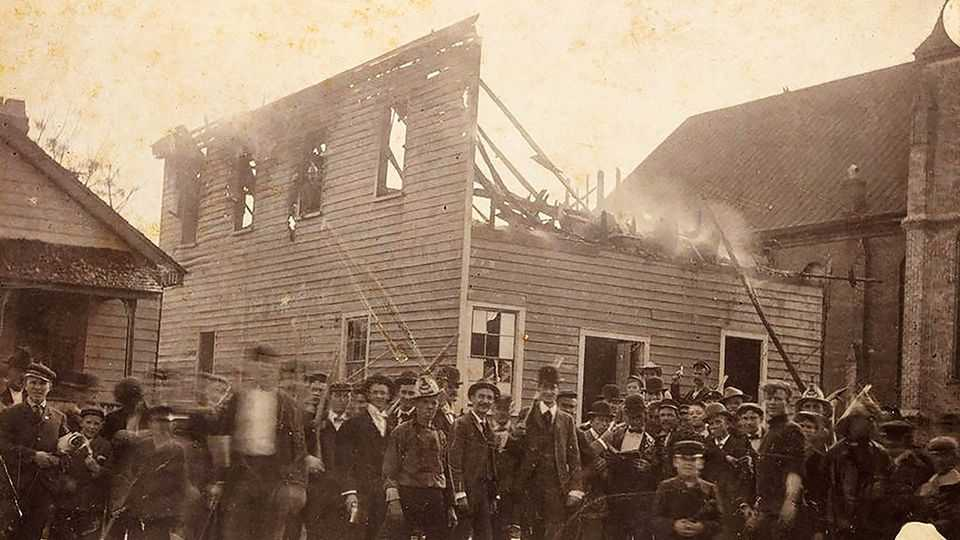

A racist massacre. A white-supremacist coup. A century of lies
A new book tells the story of an atrocity in North Carolina in 1898 and its long aftermath

Jul 30th 2026
They were confident they wouldn’t be punished—and they were right to be. The paramilitaries who torched the offices of an African-American newspaper in Wilmington, North Carolina, in 1898 posed smilingly for a photograph at the scene, as Southern lynch mobs often did (see picture). After the arson they murdered dozens, perhaps hundreds of the town’s black residents. “We have taken a city”, a white churchman crowed, “as thoroughly, as completely, as if captured in battle.”
Lauren Collins, a journalist at the New Yorker, grew up in Wilmington. “They Stole a City” is her account of the massacre and the municipal coup d’état that accompanied it. This story has been told before, notably in David Zucchino’s Pulitzer-prizewinning “Wilmington’s Lie”. The new book is distinguished by its deep interest in the origins of the horror and, especially, in its rippling reverberations: the culture of impunity, trauma, exile and resilience.
The Daily Record, the mob’s target, had published what, for its time, was an incendiary editorial. In response to scaremongering about African-American rapists, it called out the grisly history of white-on-black sexual violence. But the real grievance of Wilmington’s white supremacists was over political influence; theirs was declining as their black neighbours made overdue yet unusual gains. Three out of ten aldermen were black, as were the customs collector and coroner. White bigwigs, descendants of slaveholders, wanted their power back. White foot-soldiers resented black competition in the labour market. “On the other side of any era of the expansion of rights,” observes Ms Collins, “someone is waiting to claw them back.”
A gruesome sequence of events opened with rigging and intimidation at a statewide election. Then Wilmington’s white citizens proclaimed, in a “White Declaration of Independence”, that they would “never again be ruled by men of African origin”. On November 10th 1898 came the killing, committed by militias armed to the teeth in advance. As in the Tulsa massacre of 1921, prosperous and professional black people were targeted; many of those spared were run out of town. City officials, black and white, were forcibly replaced. President William McKinley ignored appeals to Washington for help.
Like Patrick Phillips in “Blood at the Root”, which recounts the expulsion of African-Americans from Forsyth County, Georgia, Ms Collins traces the long and tragic aftermath of the atrocity into the 21st century. A black lawyer who fled and became a judge did not visit Wilmington again until 1945. Black people who stayed found themselves working for the perpetrators, or being judged and policed by them. Shortly before her death in the mid-1960s, a survivor grabbed her great-granddaughter’s arm and whispered, “If it ever happens—run.” Ms Collins rightly measures the crime not just in violence but in loss—of livelihoods, opportunities, connections and futures.
In the memory of the white elite, this act of terrorism became a noble “revolution”. For some black people, dwelling on the outrage seemed imprudent. When it dawned, the civil-rights era was harrowing in Wilmington. The sheriff’s office was a nest of klansmen; school desegregation was brutally resisted; the imprisonment of local student activists became a global scandal. Only in the 1990s did the facts of 1898 begin to be publicly acknowledged. Typically for the region, those keen to commemorate them had to respect the feelings of the culprits’ descendants.
As she chronicles “a centuries-long day that isn’t over yet”, Ms Collins sometimes loses sight of the families she purports to focus on. Some readers may reject the parallels she draws between the coup and American politics today and her call for reparations (less impractical at a local than a federal level). Yet as the White House and militant book-banners try to downplay past racial injustices, a more fundamental struggle is being waged again: for the truth to be told and heard. This is a moving contribution to that effort. ■